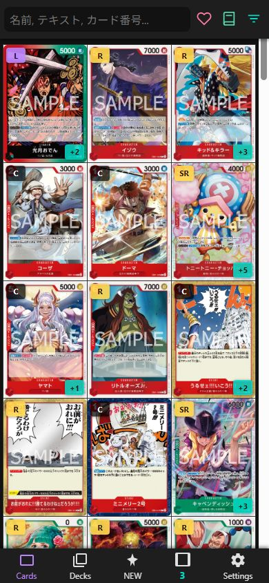
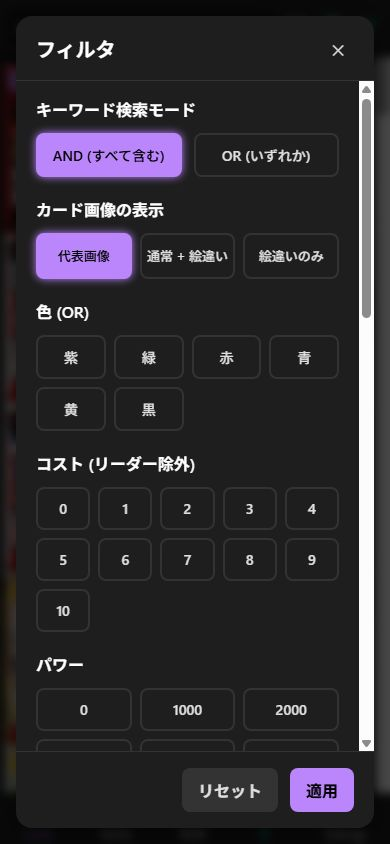
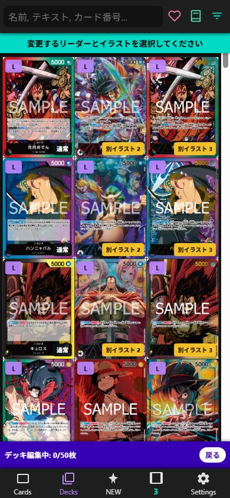
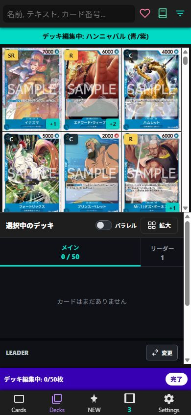
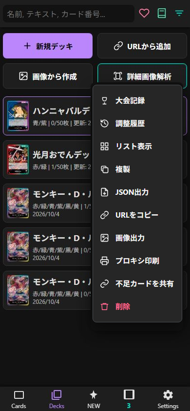
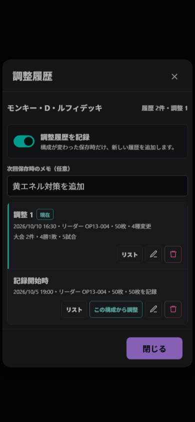
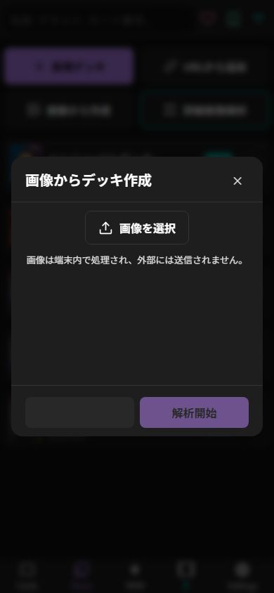
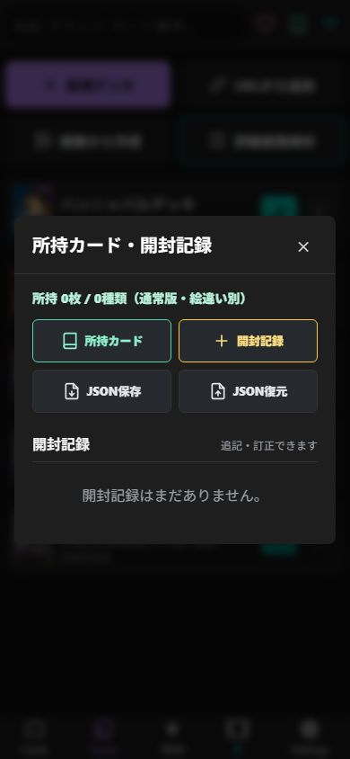
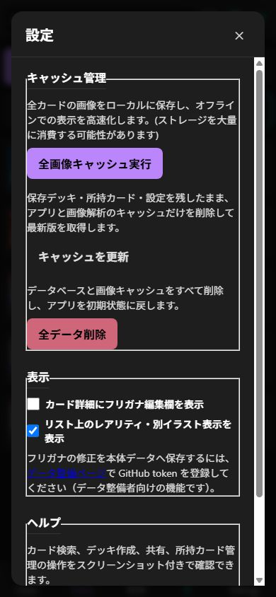

ONE PIECE CARD GAME DATABASE
OP-TCG DB
使い方ガイド
カード検索、デッキ作成、調整履歴と大会戦績、所持カードと開封記録をスマートフォンで管理するための操作ガイドです。
CARDS
カードを探す
検索と表示
- 上部の検索欄へ、カード名・効果・カード番号を入力します。
- 右上のフィルタから、色・種類・コスト・レアリティ・シリーズなどを選びます。
- カードをタップすると詳細を表示します。長押しでも詳細を開けます。
- 下部の数字ボタンで1〜5列を切り替えられます。


DECK BUILDER
デッキを作る
新規デッキ
- Decksを開き、「新規デッキ」を押します。
- リーダーを選びます。同じ番号の通常・別イラストは個別に表示されます。
- 上側のカード一覧をタップして追加します。再タップで枚数が増え、4枚の次は0枚へ戻ります。
- 下側の「選択中のデッキ」で枚数を確認し、「完了」で保存します。


DECK TOOLS
デッキを管理・共有する
デッキ操作メニュー
- 大会記録
- 相手デッキ、ジャンケン、先攻・後攻、勝敗に加え、使用した調整を記録します。
- 調整履歴
- 構成変更時のカード、選択画像、メモと、その調整で参加した大会成績を確認します。
- 複製
- 構成と選択画像をコピーします。大会記録はコピーしません。
- URLをコピー
- 相手は内容をプレビューしてから端末へ追加できます。
- 画像出力
- デッキリストを高画質PNGでプレビュー・保存します。
- プロキシ印刷
- 用紙とカードサイズを指定し、左上から詰めて印刷します。
- 不足カードを共有
- 所持カードと照合し、不足枚数をテキストまたは画像で共有します。

Decksの「URLから追加」へ共有URLまたは共有テキストを貼り付けます。内容確認後に追加されます。
バックアップや他ツールとの連携用です。カード番号と枚数を保持します。
iPhoneではプレビューを長押しして「写真に保存」も利用できます。
調整履歴を使う
- デッキ編集中の「履歴」、またはデッキメニューの「調整履歴」を開きます。
- 「調整履歴を記録」をオンにします。必要なら次回保存時のメモを入力します。
- カード構成やリーダー、選択画像を変更し、「完了」で保存すると新しい履歴が追加されます。
- 鉛筆で調整名を変更、ごみ箱で履歴を削除できます。「この構成から調整」で過去の構成を編集画面へ戻せます。
- 大会記録の「使用した調整」を選ぶと、履歴ごとに大会件数と勝敗が集計されます。

IMAGE IMPORT
画像からデッキを作る
端末内の簡易解析
- Decksの「画像から作成」を押し、デッキ画像を選びます。
- レイアウトを選択し、解析を開始します。画像は外部へ送信されません。
- 切り出し画像・一致画像・通常画像と信頼度を確認します。
- 誤認識をカード検索から修正し、50枚とリーダーを確認して編集画面へ進みます。

COLLECTION
欲しいカード・所持・開封を記録する
欲しいカード
ヘッダーのハートを押し、一覧から必要枚数を選びます。選択内容は画像として保存できます。
所持カード
ヘッダーのカード帳から所持数を編集します。通常・別イラストは別々に保存され、画像一覧も作成できます。
開封記録
BOX数とバラパック数を記録し、開封したカードを弾に関係なく追加できます。所持数にも反映されます。

PWA & DATA
ホーム画面・更新・データ
iPhoneへ追加
- SafariでOP-TCG DBを開きます。
- 共有ボタンを押し、「ホーム画面に追加」を選びます。
- 追加したアイコンから起動すると、PWAとして全画面で利用できます。
更新できないとき
Settingsの「キャッシュを更新」を実行します。保存デッキ・所持カード・設定は残り、アプリ本体と解析キャッシュだけを更新します。

TROUBLESHOOTING
困ったとき
画像や新しいカードが表示されない
通信状態を確認し、Settingsの「キャッシュを更新」を実行してから再起動します。仮DBのカードは下部のNEWに表示されます。
共有URLを開いてもPWAへ移動しない
iOSはWebリンクからホーム画面版へ自動転送できません。URLの共有テキストをコピーし、PWAのDecks「URLから追加」へ貼り付けてください。
画像解析の結果が違う
結果画面の「変更」から候補を検索して修正します。元画像をトリミングせず、カード番号と枚数が読める解像度で試してください。
保存データを別端末へ移したい
デッキは共有URLまたはJSONで移せます。ログインやクラウド同期は行わないため、所持・開封データは端末ごとに管理されます。